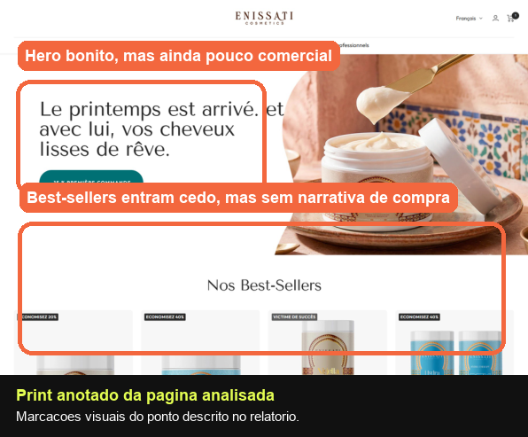
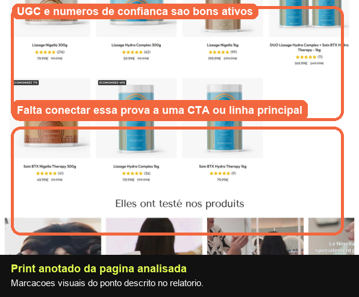
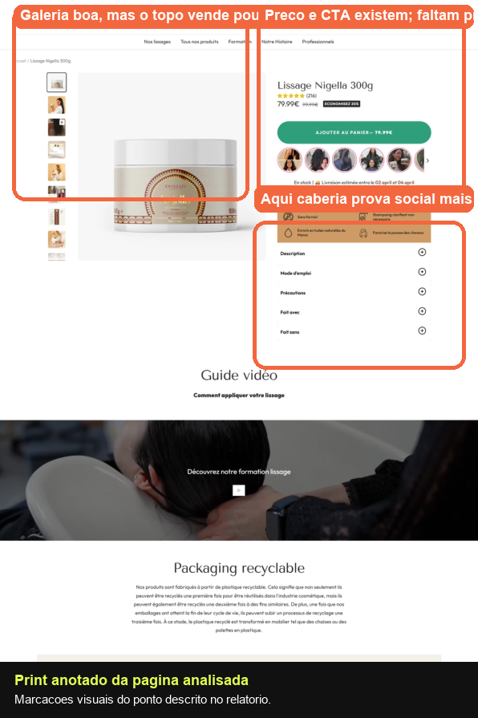
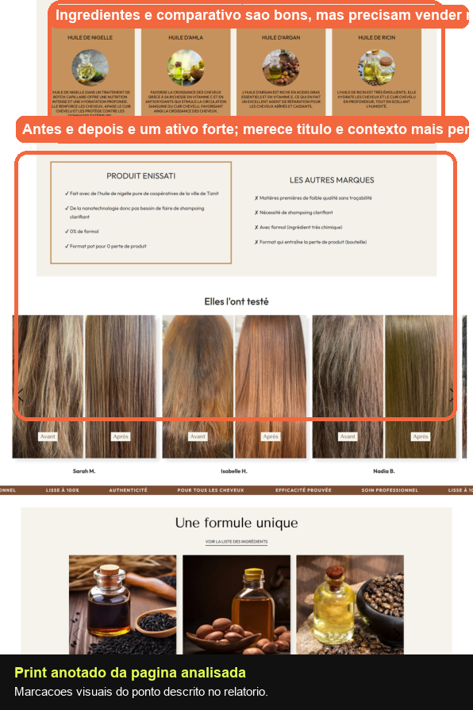
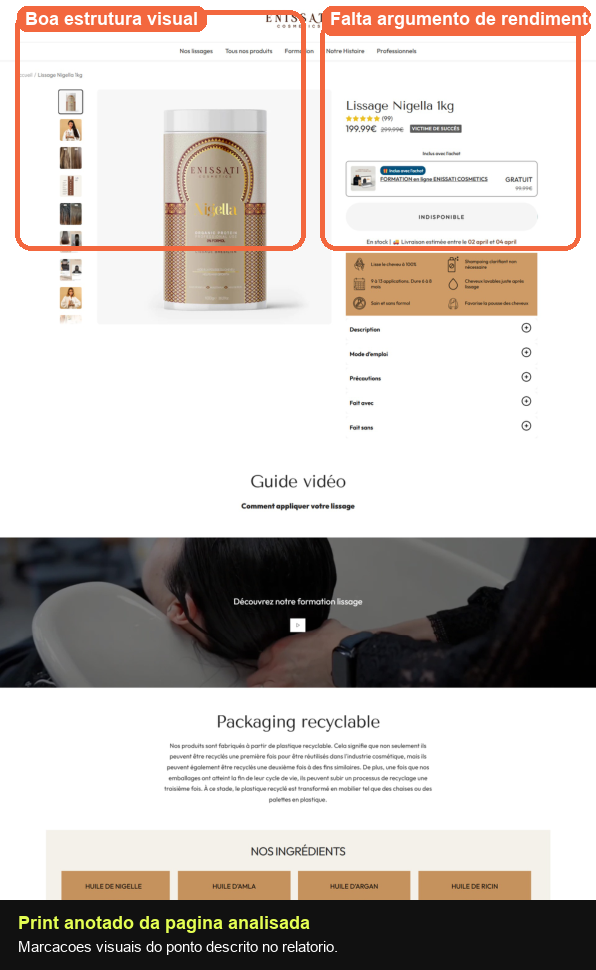
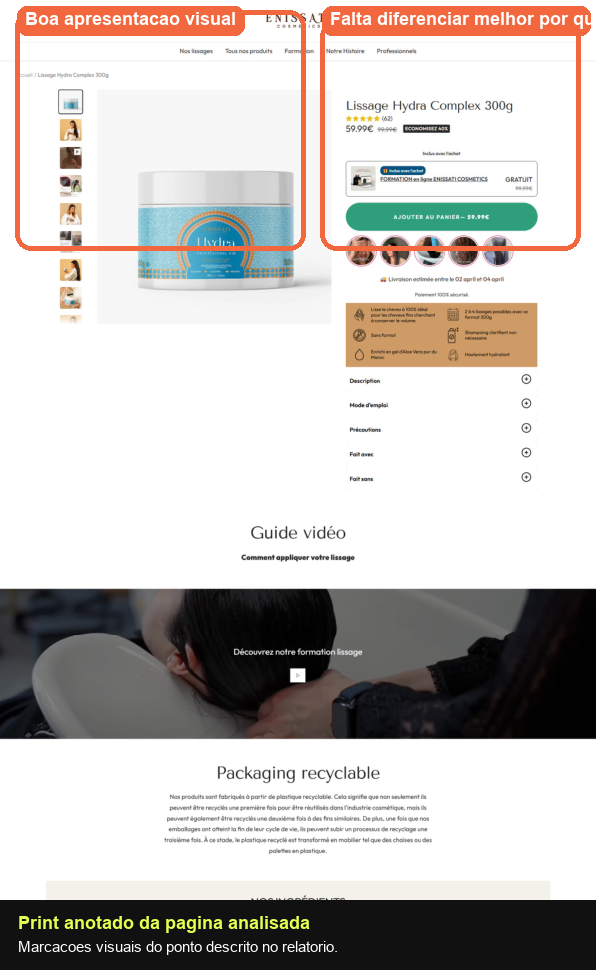
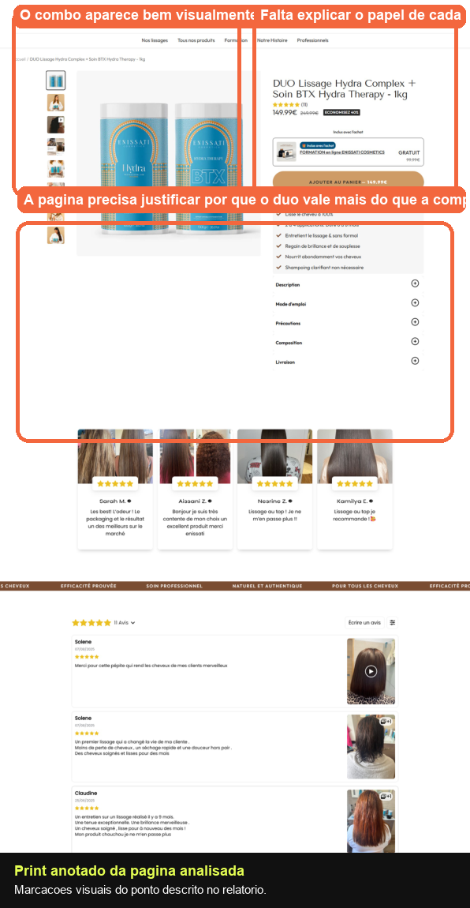

This report rebuilds the previous analysis in a more operational format. For each page, the document shows the section analyzed, what exists today, what needs to be changed and a practical example of how the improvement could appear on the page.
Instead of commenting only on overall performance, this new version organizes the reading as an adjustment plan. The recommendations are based on Enissati screenshots, annotated assets and the previous Markdown analysis.
Hero, benefits, video, ingredients, comparison, before and after, reviews and FAQ.
Each point explains what already exists, where it is weak and how to repackage the section.
The improvements follow the common patterns of promise, proof, mechanism and CTA.
Where the PDF provided no extractable text, I used only what was visible in the screenshots and in the previous report.
This page works as the main category showcase. The visual presentation is well resolved, but it still does little to guide the visitor toward a specific commercial decision.

The hero communicates brand and aspiration, but it still does not make clear which line solves which problem or what the next click should be.

Best-sellers, UGC and trust numbers already exist. The bottleneck is the connection between these assets and a more aggressive exploration CTA.
Beautiful and premium, but too institutional.
An aspirational headline in French, strong product imagery, a premium environment, a visible CTA and consistent visual direction.
Replace a brand hero with a commercial-direction hero. The first fold needs to tell the visitor what result they will find there and who each line is for.
The products appear early, but without a purchase narrative.
A best-sellers grid with image, name, stars and price. The section helps navigation, but does not prioritize which product should be attacked first.
Turn the grid into a block guided by purchase intent. Instead of only listing best-sellers, name the main benefit of each line and highlight a lead product.
A strong asset, but commercially underused.
Customer videos, moving social proof, satisfaction numbers, customer volume and brand authority.
Use this proof to drive the click, not only to reinforce branding. A CTA is missing right after the block, along with a short line linking proof to purchase.
The page sells brand presence, but not a path.
The experience is clean, elegant and well segmented, but the visitor still has to figure out on their own where to go.
Introduce objective-based navigation logic. The page needs to help the user classify themselves before exploring the catalog.
This is the PDP with the strongest foundation to become a high-converting page. It already has most of the right blocks, but still needs to reorganize the narrative to sell the result earlier.

Gallery, price and CTA are present. The problem is that the top still speaks more about the product than about the transformation.

Ingredients, comparison and before-and-after proof are strong assets. They need stronger context, stronger titles and an intermediate CTA.
The top already has structure, but it still sells weakly.
Product name, stars, price, buy button, thumbnails, small icon-based benefits and an accordion below.
Replace the logic of name, price and CTA with result, proof, price and CTA. The title needs to become a benefit and the three main gains need to appear together.
It exists, but appears with little narrative strength.
Avatars, stars and review volume appear at the top, but without becoming a strong trust argument.
Pull social proof into a decision statement. The customer needs to understand that other people already bought and approved this exact product.
A good educational block, but disconnected from the decision.
An application video with good demonstrative value, but without much commercial framing before it appears.
Add a value-driven title and one line of framing that explains what the user will notice by watching it. After the video, add a short CTA.
The content is good, but too technical for someone who has not decided yet.
Visual ingredient cards with detailed information and strong editorial presentation.
Make each ingredient answer what it changes in my hair. Today the page explains the active, but does not translate the gain quickly enough.
A strong section, but it still needs to sell perceived advantage.
A comparison table showing differences between the Enissati formula and common brands.
Add a headline that translates the comparison into a benefit. The visitor should not have to interpret the table alone.
A very strong asset that still appears without enough context.
A results carousel by hair type, before-and-after proof and real visual transformation evidence.
Give it a stronger selling title, a framing sentence and a CTA right after the block. This is one of the areas that reduces objection the most and should push the click forward.
Good for objection handling, weak for closing the sale.
An accordion with questions, well organized, but without a strong commercial reset before the end of the page.
Add a final block with a summary of benefits, proof and CTA. The FAQ should remove objections and immediately deliver the next action.
The visual structure is ready, but the page still does not explore the main reason to buy this version: yield, repeat use and stronger perceived value than the smaller size.

The screenshot makes the central point clear: the page shows the product well, but does not strongly justify why the larger package is worth more.
A yield argument is missing.
The same structure as the 300g version: product name, price, CTA, small benefit blocks and thumbnails.
The top needs to state quickly who the 1kg format is for. Without that, the visitor only sees a higher price.
The page does not compare the 1kg format with the smaller option.
An isolated price, with no translation of savings, usage quantity or direct comparison to the 300g version.
Create a micro-block below the price showing savings and the ideal buyer profile. This shifts the reading from more expensive to smarter choice.
Out of stock needs to become an interest capture opportunity.
The button appears as unavailable, which interrupts the journey and cools intent without capturing the lead.
When the product is out of stock, the main module should replace the purchase CTA with a waitlist, back-in-stock or pre-reserve CTA.
They educate, but do not reinforce the larger-format thesis.
The same video and ingredient blocks as the smaller PDP, with a good visual and technical foundation.
Connect these blocks to continuous use and repeated results. The 1kg size should be presented as the rational choice for those who want to maintain the treatment.
The page is visually well presented, but the hero still does not make clear why this formula should be chosen over the other lines in the brand.

The annotation already marks the exact point: the product looks beautiful and premium, but the role of the Hydra Complex formula still lacks stronger differentiation.
It does not yet explain why to choose Hydra Complex.
Product name, price, CTA, strong main image and the same structural pattern used across the other PDPs.
The headline needs to answer which specific need makes this line different from Nigella or the duo. Without that, the page becomes just another package in the catalog.
The icons help, but they still do not build a promise.
A compact list of technical attributes and usage signals in small blocks below the purchase area.
Regroup the benefits into three clear customer-oriented outcomes, not only product characteristics.
It needs to explain what the user will learn and gain.
A functional video introduced as a neutral demonstration block.
Support the video with a short expectation-setting line and a purchase close right after the content.
A good base, but still too similar to the other pages.
The page repeats a solid brand structure, which helps consistency, but reduces differentiation between lines.
Each PDP needs its own master statement, specific usage context and distinct closing. The issue here is not poor structure, but insufficient offer identity.
The combo looks visually valuable, but the page still does not convincingly explain the role of each item or why the duo is worth more than buying a single product.

The hero shows both products well. The weak point is the justification: the page still does not sell the combo as a complete system.
Strong visual presentation, but low functional clarity.
Dual packshot, large title, price, CTA and the same visual module pattern used by the brand.
Explain at the top what each product does and why the two together create a better or more complete effect.
It does not yet explain why the duo is worth more than the individual purchase.
The set price appears without a clear breakdown of value: savings, complementarity or final result.
Add a short block below the price with three proofs of value: the role of each item, who the duo is for and what package advantage exists.
Today the visitor does not see the sequence of results.
There is a list of benefits, but the relationship between the two products is still not didactic enough.
Turn the block into a usage journey: step 1, step 2 and the final perceived result. That makes the duo feel like a system, not a random sum of SKUs.
The reviews help, but the page does not close the duo thesis.
Review cards with stars, comments and real photos. A good trust asset for the lower part of the page.
Before the reviews, insert a summary block of the complete system. After the reviews, repeat the CTA with a final value-based statement.
The fastest gain comes from correcting the message at the top, the value presentation and the connection between social proof and CTA.
Replace nominal titles with a clear promise, group the three key benefits and tie stars and proof to the promised outcome.
Differentiate 300g, 1kg and duo with distinct arguments around use case, yield, complementarity and ideal buyer profile.
After video, comparison, before-and-after proof and reviews, repeat a short purchase prompt. Today the page educates, but closes weakly.